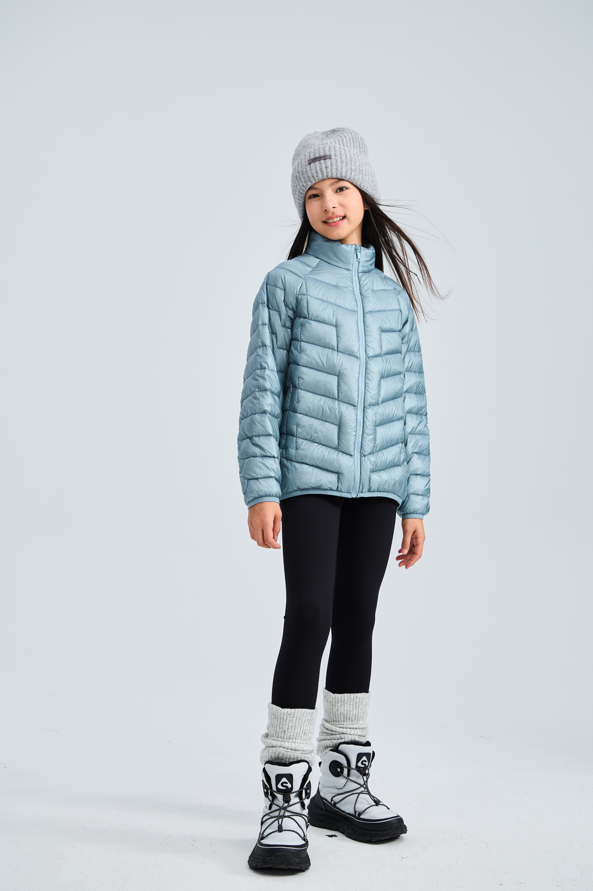
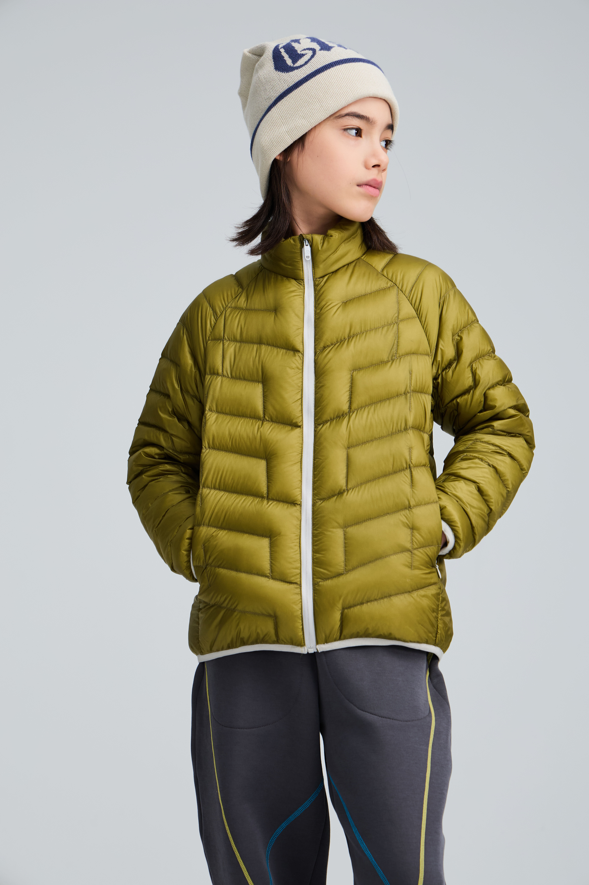

选购指南 · 阅读样式
校服内搭，先看哪些信息？
先核对具体款式的成衣尺寸，再考虑日常叠穿需要。年龄与“大码”标签，不能代替版型和尺寸判断。
- 确认款式与版本。
- 查看对应尺码表与测量说明。
- 核对穿法及护理建议。
编辑草稿 · 选款关系与正文待商品审核。
回看产品信息样式 ↗冬季形象提案 / EDITORIAL ALPINE
WINTER, IN YOUR OWN STRIDE.
探索鹅绒系列 ↗奇动 AMAZING SPORT
儿童与青少年的冬季运动美学

01 / 少年的冬季

从穿着状态，走近产品设计
内部信息样式示意 · 无虚构产品参数或检测结论。
03 / 选购指南
留白之外，
信息清楚。
选购指南 · 阅读样式
先核对具体款式的成衣尺寸，再考虑日常叠穿需要。年龄与“大码”标签，不能代替版型和尺寸判断。
编辑草稿 · 选款关系与正文待商品审核。
回看产品信息样式 ↗